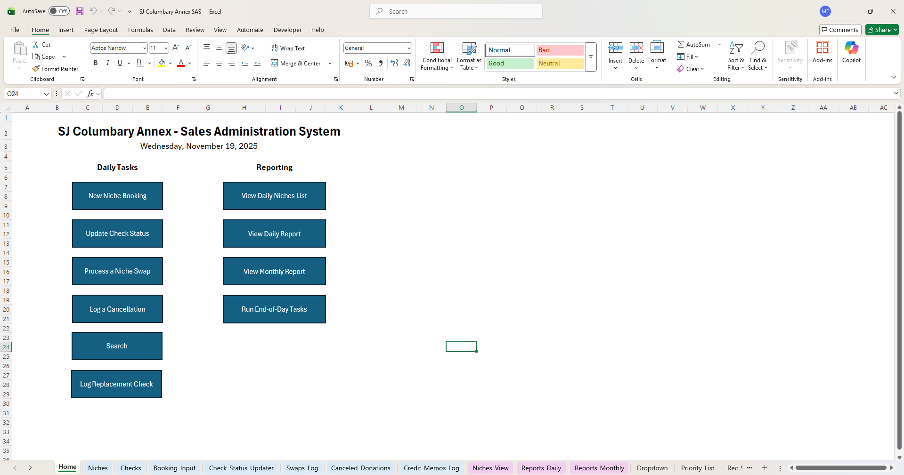
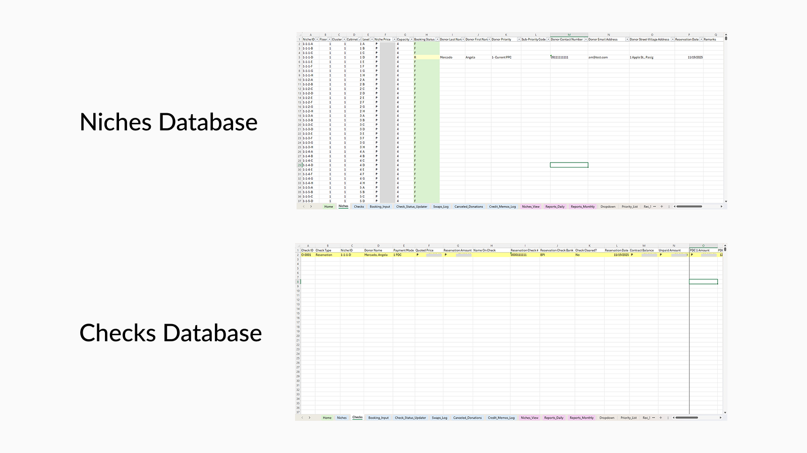
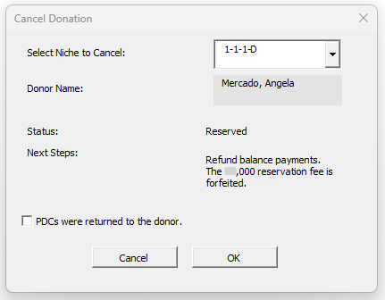
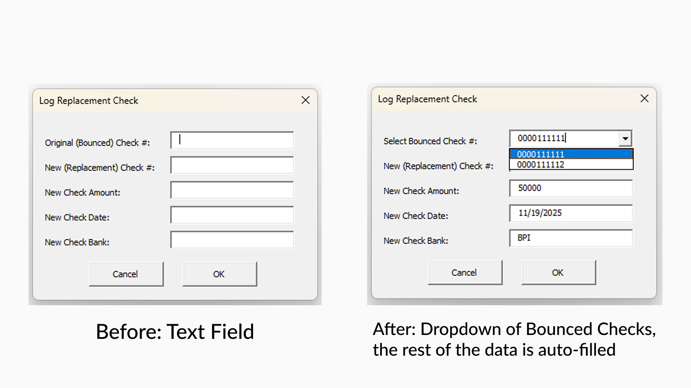

Designing a "zero-to-one" reservation system to manage pre-sales for a new columbary

I designed the columbary's first-ever digital sales system from the ground up, proactively preventing the chaos of a high-stakes, manual process and its costly errors. I delivered a single, automated Excel application where the Columbary Sales Assistant (CSA) can now manage thousands of niches, process complex financial transactions like swaps and cancellations, and generate all legal documents in a fraction of the time all from one error-proof, guided interface.
The user, a Columbary Sales Assistant (CSA), is responsible for managing 2,800+ niches, tracking a mix of reservation fees and post-dated checks, and manually processing complex financial swaps.
My goal was to design a system that guides the user, prevents all possible errors, and automates every repetitive task. I had to design and build a reservation system from scratch, and create a solution that was 100% reliable, intuitive for the CSA, and built within their existing tool: Microsoft Excel.
The main challenge was translating a high-stakes sales process with complex, state-dependent business rules into a simple system. I designed a relational-style model within Excel, centered on two master databases: one for tracking the physical (Niches Database) and another for all checks and financial transactions (Checks Database). This two-database structure, linked by a unique ID, became the "brain" that enabled all the subsequent automation and logic.


With the logic defined, my design mindset was proactive guidance to prevent errors before they could happen. I designed smart UserForms that act as "guided wizards," such as the cancellation form that instantly queries the database, displays the niche's financial status, and shows the correct policy (e.g., "Status: Paid" and "Policy: No refund...") before the user can even click 'OK'. This proactive step turns complex policy into a simple, guided action.
I tested each feature directly with the CSA to find pain points, which led to key design iterations. For example, the CSA found replacing bounced checks tedious, so I redesigned the Replacement Check form from a blank text box into a "smart" dropdown that auto-fills all known data (Amount, Date, Bank), reducing data entry for that task by 75%. Finally, I automated the full loop, creating macros that generate all legal documents and a flexible End-of-Day task that empowers the user with backup and report options.

The biggest challenge wasn't just solving a problem, but anticipating future problems. Designing a system from scratch with no prior basis meant I had to think through every possible 'what if' scenario (e.g., 'What if a client cancels?' or 'What if they change payment plans?'). This required meticulous planning and a truly flexible architecture.